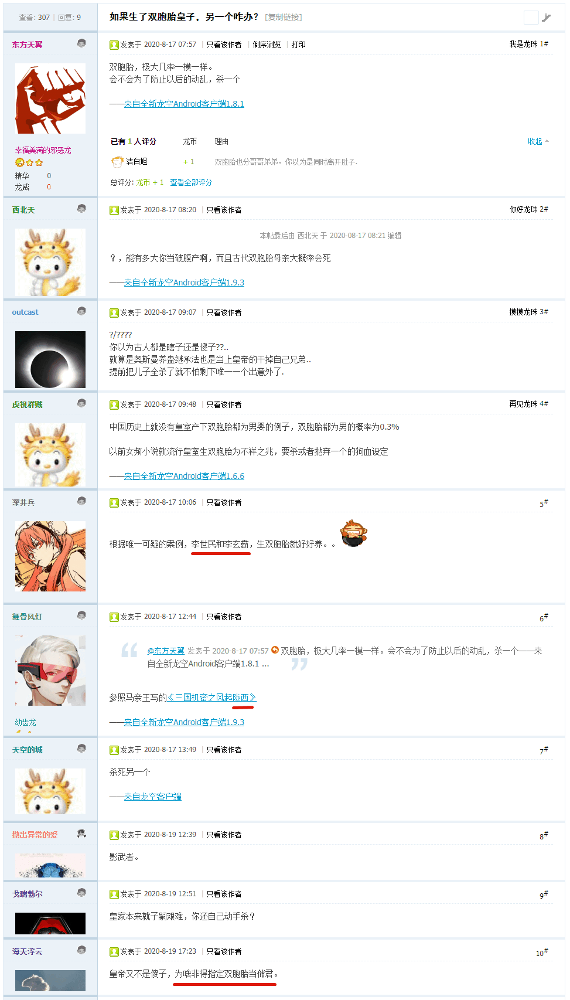

2020-08-19 10:20
小憩片刻，爬起来上网乱转发现国际化大都市「华语第一精日论坛」出现了一条那啥含量甚高的重要情报：
关于日本人“姓”的问题
在日本的影视文娱作品里，经常能看到一些奇葩的姓。日本明治维新之前，底层人民是没有姓的，明治维新之后，政府为了方便管理，才开始有姓，而且姓都是由人民自己起的，奇葩姓氏多也可以理解，但是日本影视文娱作品里的少部分的姓一眼就给人一种为了埋伏笔或者玩梗凭空捏造，现实里根本不会有的感觉，比如假面骑士的飞电或人，虽然国产的那些影视文娱作品，也经常有为了装逼，搞些只存在于百家姓书本上，现实中已经不存在（绝后或后代改姓）的单字姓和复姓，大部分都是用复姓，因为那样子逼格更高，但是这些姓名至少都是有迹可循的，有文献记载的。
那么在日本的影视文娱作品里，还有哪些是为了创作需要而新造的姓？我国的影视文娱作品有这种现象吗？
JK罗琳的作品好像很多人物的姓也是这种情况
什么院什么堂什么寺什么坂这类三字姓很多都是，就是为了装逼生造的
日本人名字最有趣的不是文字和读音双轨制吗
刚才「洗完澡了精神抖擞容光焕发」之后，先往「女侠与四大舔狗」大纲当中填了一些内容。结合本条情报，可以设定迄今为止仍然在《异闻录》正文中没有出现过的友邦人士「满铁调查课」「军情六处」双重间谍特务卧底，龙套某。
“西敏寺野梅，原来是这么念吖，你是佛教徒么？”
“不，基督教圣公会”，西敏寺野梅在胸前画了个米字，“God Save the King……唔，现在是Queen了”。
通常这些来自架空地名的「装哔生造」的三字姓都用音读，「和族同胞」装的是我中华兲朝上国的汉哔，不是南不列颠及北爱尔兰的洋哔。所以，在《设定集》那边准备照葫芦画瓢，第十三篇设定〈雷霆雨露皆是君恩〉当中出现的「紫光阁」「钓鱼台」乃至「怡红院」「潇湘馆」「蘅芜苑」「稻香村」，都可以拿来当作日本特色「苗字」。
2020-08-20 05:00
刚爬起来酒劲还在头昏脑胀，上网乱转发现一条古为今用洋为中用的重要情报：
在《震惊钟楼怪人与重磅科学怪人》当中已经提到了我中华兲朝上国「出版界」的政治规矩和组织纪律，要以联合国五种工作语言和三种法西斯文字倒逼境内全面深化新闻出版广播电影电视体制改革，各地人民出版社与新华书店以及各大互联网新媒体，认真学习、深刻领会、全面把握，增强“四个意识”、坚定“四个自信”、做到“两个维护”，切实把思想和选题策划行动统一到那谁系列重要讲话精神上来，统一到中央对当前形势判断和宣传工作大政方针上来。
……
简单说，雨果名著《巴黎圣母院》旧译《钟楼怪人》，而玛丽·雪莱名著《弗兰肯斯坦》旧译《科学怪人》，从此开创了一个「萌翻」流派。
比如红色名著《钢铁侠是怎样炼成的》曾译为《铁道怪人》，天安门广场上躺着的那位之传记曾译为《游泳怪人》，南不列颠及北爱尔兰联合王国于2017年出品的架空大作《查理三世》曾译为《待机怪人》，预定美帝灯塔国川普大统领自传《短信怪人》以及我中华兲朝上国全票冻蒜人民领袖传记《出版怪人》……
……
……不惮以最大的恶意揣测，接下来境内流传的翻拍经典大概有两个套路。
古装历史剧一律「震惊」开头，如大仲马「侠隐三部曲」应该译为《震惊捉奸》《震惊请愿》《震惊夺嫡》。
科幻奇幻剧一律「重磅」开头，如卢卡斯「星战三部曲」应该译为《重磅缉私》《重磅剿匪》《重磅崩盘》。
当时举例选了这两套三部曲，其实也蕴涵着充沛的政治和意识形态内容并企图引领激烈的政治和意识形态斗争新动向。理由之前提过多次了，幕后黑手总是以文艺作品替阴谋诡计洗地，甚至先炮制文艺作品再指使名角大腕「vtuber皮」一切行动听导演指挥原封不动执行剧本。
所以，之江钦定文豪查博导抄袭剽窃借鉴法兰西钦定文豪大仲马复制并成功的典故，就被我中华兲朝上国大批有自尊心、自信心、自豪感的作者与读者深入揭批过许多次了。涉及「虐文」场合就提到《连城诀》与《基督山伯爵》的雷同之处，涉及「爽文」就提及《书剑恩仇录》与《布拉日隆子爵》的雷同之处。最终结论，不排除同一个幕后黑手于百年前豢养了大仲马并于百年后豢养了查博导的可能性，然后就被各大宣传阵地忠君爱国管理员以「政治敏感」理由「亦当删去」。
结合之江临安「原创文学论坛」当中应景出现的重要情报：

就可以理解市面上那一堆《说陈全传》《说乔全传》《说石全传》《说江全传》相关炒作的政治和意识形态目的了，尤其是《说陈全传》明确提出了之江海宁人老陈高瞻远瞩算无遗策运筹帷幄决胜千里，双胞胎儿子一个送进国际一流和谐宜居之都紫禁城当皇上偷家，一个「滚回陇西成纪（今甘肃省天水市秦安县）去，幽州（今国际一流和谐宜居之都）不是你的家」当缓则在内亚收编三股势力马瓦力武德。
爆料中「唯一可疑的案例」就是李世民出生日期有两种说法，其中一种与李玄霸同年，另一种则早了一年，到底是不是由于「双胞胎」难分伯仲于是强行规定高低贵贱，这事要问窦老太太。如果参考分身术影武者之类爆料，李世民武德充沛战无不胜攻无不克就有了足够的唯物主义解释了，不再是什么兲纵奇才，只不过是擅长战略欺诈而已。
再看吹得神乎其神的一石二鸟虎牢之战，也可以理解为窦老太太不仅指使「干惊天动地事做隐姓埋名人」的儿子无私奉献，还安排娘家人唱双簧，赚开洛阳城门兵不血刃消灭王世充，窦建德被杀是因为李渊警惕外戚而已。包括玄武门之变也不是杀伐果断，而是李世民在大手情报机构眼皮底下端坐秦王府吃香的喝辣的享受青春，替身演员李玄霸则出生入死负责埋伏暗算。
在查博导重要讲话《说鲜卑人令狐计划全传》当中的「桃谷六仙」，也是中间一对双胞胎桃枝仙和桃叶仙，「糊涂父母」记不清谁大谁小。结合到大野家的鲜卑柱国出身，影射明显。对于这个细节，每次我在与博导学家较劲的时候，总会遭遇「政治敏感」理由「亦当删去」还被推送大批「民科」「杠精」「反社会人格」垃圾信息占用带宽。
既然「成王败寇」「胜利者不受谴责」「历史由胜利者书写」，那么纠结李世民到底改没改历史的唯物主义证据已经不重要了，肯定连同出生日期都改了嘛，就用法制新闻的措辞描述，身份证上只有性别是真的。既然「一切历史都是当代史」，那么纠结「家长控制欲十足孩子苦不堪言」之类社会新闻已经不重要了，肯定惦记着「榜样的力量是无穷的」嘛，就用娱乐至死の童年逗哔的话语体系，煽动抹布不懈奋斗直到摘桃子灭口的时候再篡改档案接受帐号（你有身份证么）并嘲笑其不过是「游戏代练」而已。